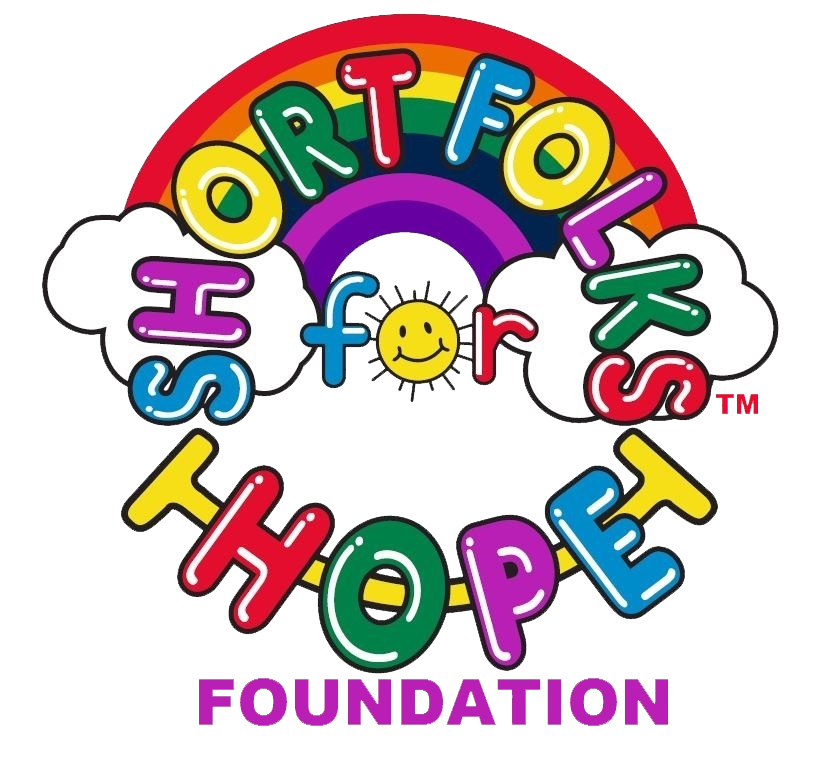

<section id="charity">
    <div class="container">
      <div class="row">
        <div class="col-md-7 col-sm-12">
          <div class="block">
            <div class="section-title">
              <h2>Short Folks for Hope Foundation</h2>
            </div>
            <p>Furcationland raises money for the 
                <a href="https://shortfolks.org/?ref=fcl">Short Folks for Hope Foundation </a>
                which is a 501(c)(3) cancer support charity founded by breast cancer survivor Kristen Short. Kristen is a singer/songwriter, wife to Chris and mother of three.  Through Kristen's cancer journey, which began July 15, 2010, she has met many courageous cancer warriors and kind caregivers and supporters who inspire her and give her hope</p>
            <a href="https://shortfolks.org/?ref=fcl" class="btn btn-default">Learn More!</a>
            <a href="https://shortfolks.org/donations?ref=fcl" class="btn btn-default">Donate to Short Folks for Hope Foundation</a>
          </div>
        </div><!-- .col-md-7 close -->
        <div class="col-md-5 col-sm-12">
          <div class="block">
            
          </div>
        </div><!-- .col-md-5 close -->
      </div>
    </div>
  </section>